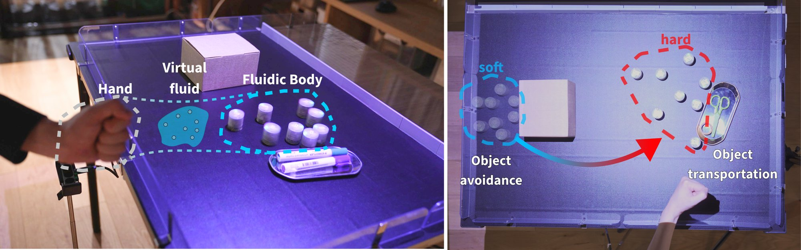
Swarm robots have attracted growing interest as a physical interface for human–computer interaction, since a swarm can reshape its formation to fit the objects and surroundings it works with. For a human operator, however, adapting the swarm's behavior remains difficult. Most existing methods require the user to specify where the swarm should go, and they offer no intuitive way to change the collective's behavior as each task demands. We present Fluidic Body, a system that lets a person operate a swarm of fluid-imitating robots as an extension of the hand. The system places a virtual fluid between the hand and the swarm, and the user adapts the swarm's behavior to each task by changing the fluid's properties through simple hand movements. When the user opens the hand, the swarm becomes soft enough to deform and flow around obstacles. Closing the hand turns it into a hard, cohesive body that can push objects. We evaluated the controller's performance and its operability in two simulation experiments and one demonstration with physical robots. First, our controller handled both obstacle avoidance and object transportation better than an existing method that behaves the same way in every task. Second, in a VR user study, 17 participants completed the combined avoidance-and-transportation task faster and more reliably than with that method. They also reported a lower workload and a stronger sense of agency. Finally, this experience carried over to physical robots in a real-world demonstration (88 participants). These results suggest that treating a swarm as a fluid, a material people already understand, allows a robot swarm to work as a deformable extension of the human body.
Existing swarm interfaces mostly let a person say where the swarm should go. Fluidic Body lets a person also change how it behaves. A virtual fluid sits between the hand and the swarm: the hand sets the fluid's properties, and the robots behave as that fluid would. Because people already know how fluids move, they can anticipate how the swarm will respond.
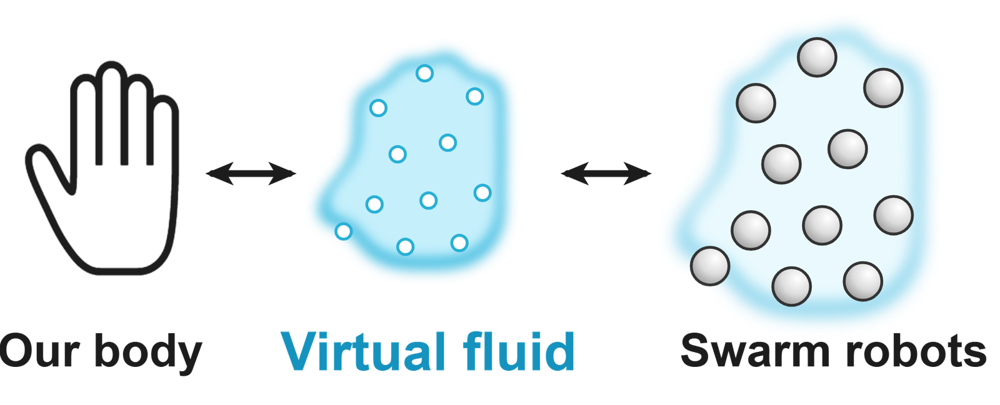
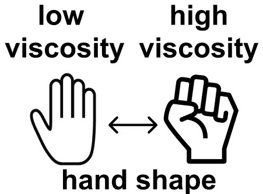
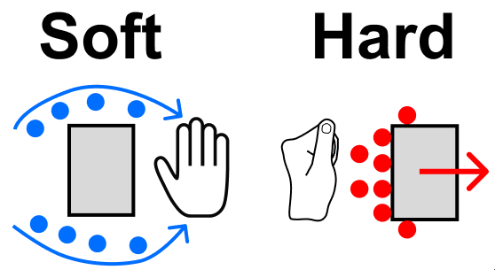
Hand shape switches the fluid. An open hand selects a soft fluid (low viscosity and density) that deforms and flows around obstacles. A closed hand selects a hard fluid that holds together and pushes objects.
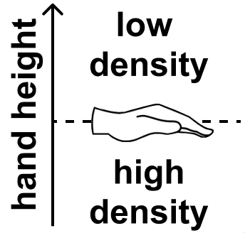
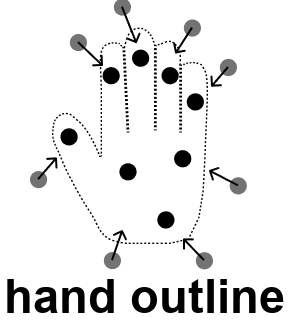
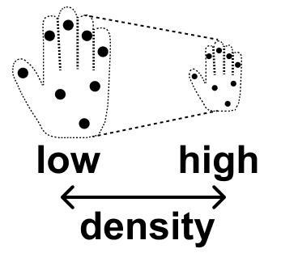
Hand height sets the density: raising the hand widens the spacing between robots and spreads the formation. Hand outline becomes the swarm area, and the formation follows it as it changes.
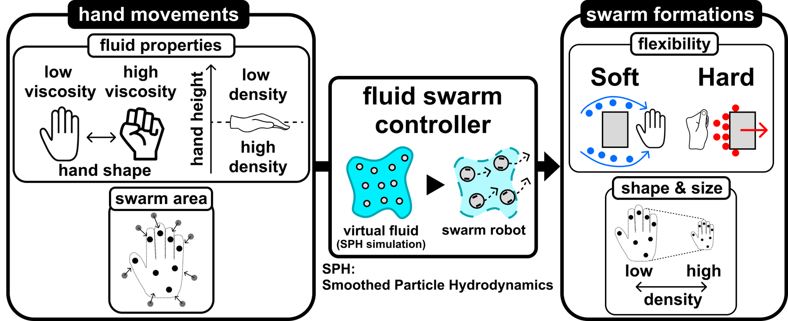
Fluidic Body controls the swarm with smoothed particle hydrodynamics (SPH), which represents a fluid as a set of particles. Treating each particle as a robot turns the fluid simulation into a controller that makes the swarm imitate fluid behavior. The hand sets the viscosity, which governs how stiffly the formation moves, and the reference density, which governs how compact it is.
The controller builds on our previous SPH controller for obstacle-unaware navigation (see Related Projects).
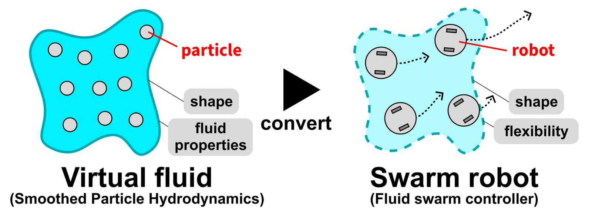
Q1. Does matching the fluid properties to each task let the swarm adapt better than a fixed baseline?
We compared two fluid settings, Fluid soft and Fluid hard, against an RVO baseline (reciprocal velocity obstacles, as used in Swarm Body) that behaves the same way in every task. A swarm of 16 robots followed waypoints in an obstacle-avoidance task and an object-transportation task (50 trials each).
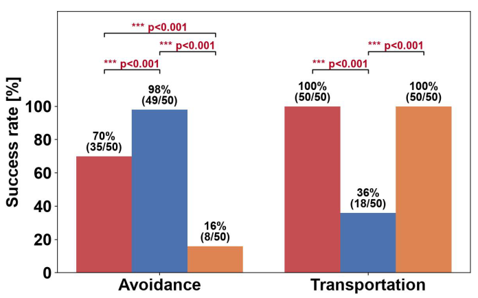
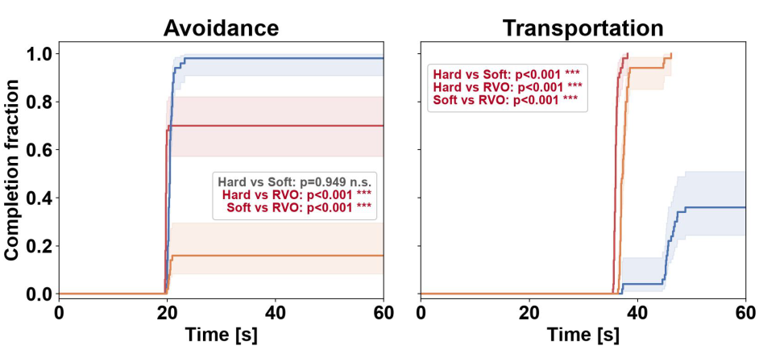
| Method | Avoidance success | Avoidance time (s) | Transportation success | Transportation time (s) |
|---|---|---|---|---|
| RVO | 16.0% (8/50) | 20.41 ± 0.30 | 100.0% (50/50) | 37.77 ± 2.01 |
| Fluid soft (ours) | 98.0% (49/50) | 20.56 ± 0.60 | 36.0% (18/50) | 45.11 ± 3.05 |
| Fluid hard (ours) | 70.0% (35/50) | 19.76 ± 0.13 | 100.0% (50/50) | 36.05 ± 0.50 |
A1. No single behavior suits both tasks. The soft fluid suits obstacle avoidance and the hard fluid suits object transportation, so switching between them handles both, while the fixed RVO baseline handles only transportation.
Q2. Can users complete tasks faster and more reliably by changing the fluid?
Q3. Does changing the fluid improve the operating experience?
17 participants operated the swarm with tracked hands in VR, in three environments: obstacle avoidance, object transportation, and a combined avoidance-and-transportation task. They used both our Fluid controller (open hand = soft, shown blue; closed hand = hard, shown red) and the RVO baseline, where one robot follows each joint of the hand as in Swarm Body.
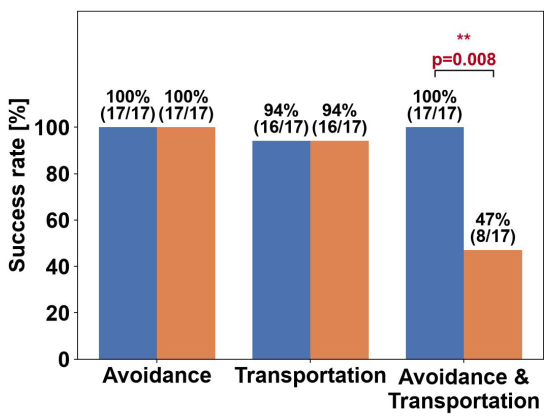
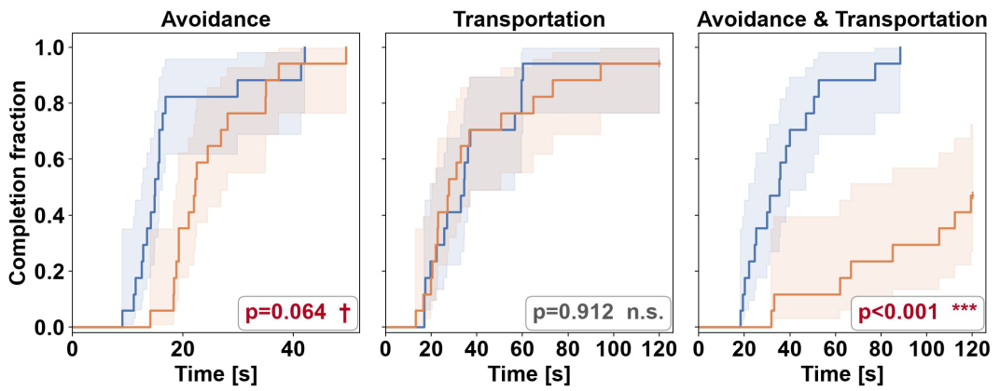
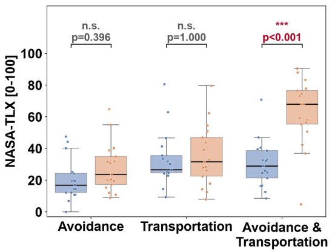
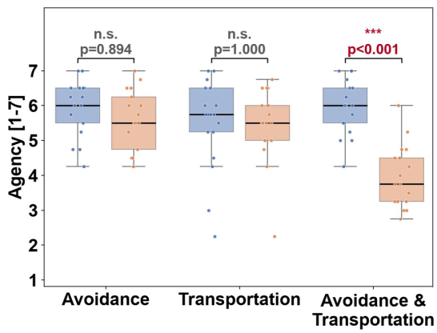
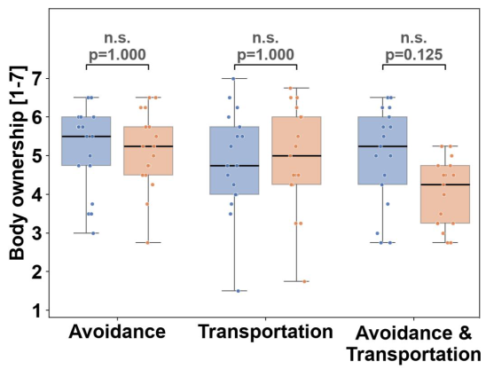
A2 / A3. The two controllers diverge most on the combined avoidance-and-transportation task: with Fluid, every participant succeeded and finished faster, with a lower workload and a stronger sense of agency.
Q4. Does the operating experience carry over to physical robots?
We ran a public demonstration at ACM SIGGRAPH 2025 Emerging Technologies. Visitors guided a physical swarm of maru robots around everyday objects on a table and carried one into a pick-up zone. Over four exhibition days we collected 88 questionnaire responses.
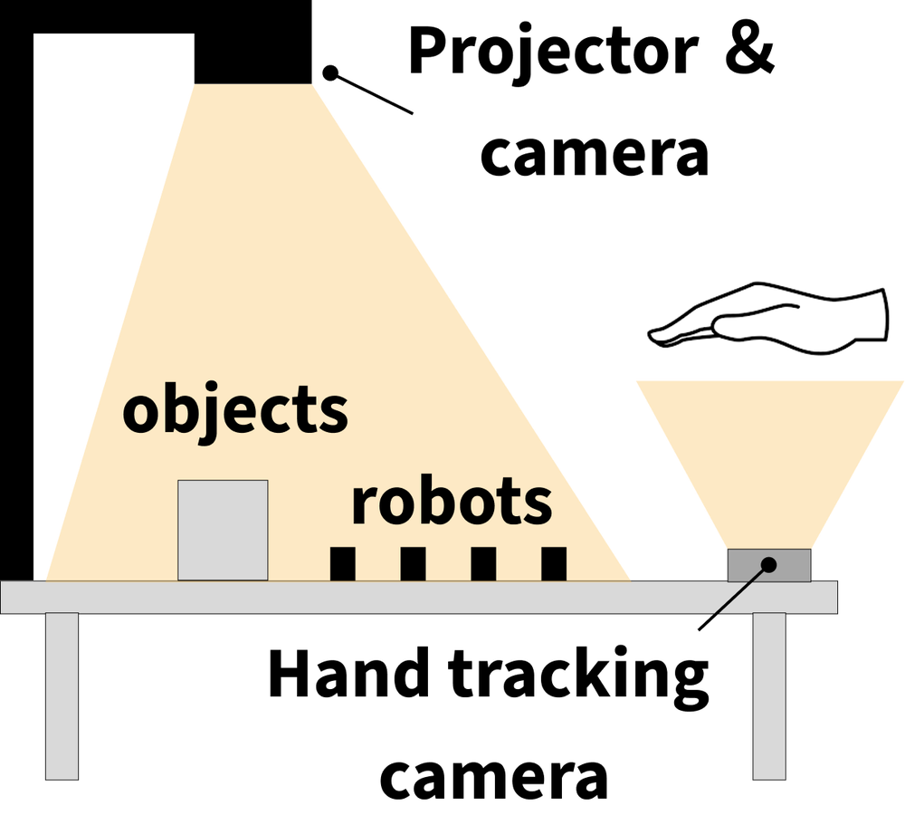
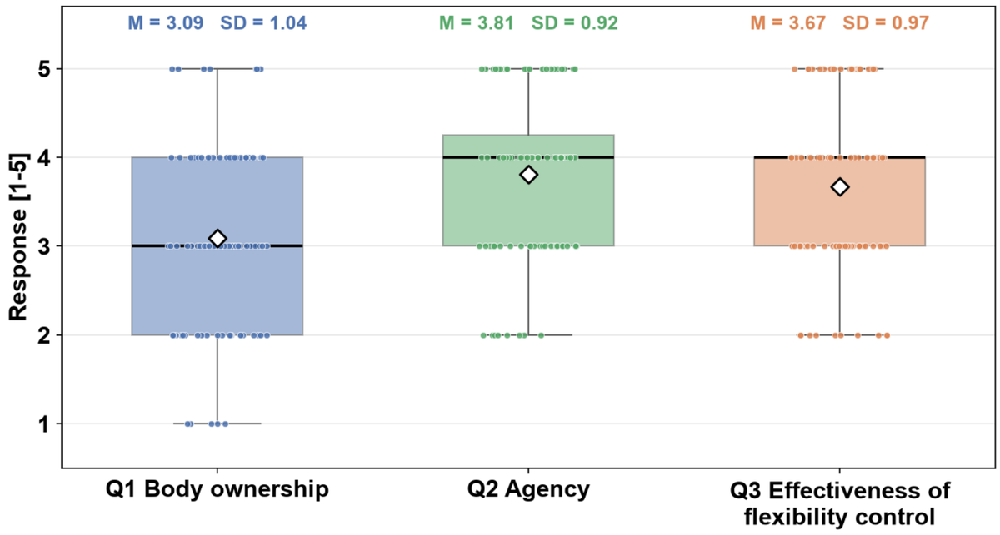
Agency and the effectiveness of flexibility control were rated clearly above the neutral midpoint, while body ownership stayed close to it. Many participants described the swarm as organic or alive, and some likened it to leading a colony of ants.
The most common complaint was latency between the hand and the swarm, which made fine manipulation harder.
@article{eguchi2026fluidicbody,
author = {Eguchi, Michikuni and Yoshida, Shigeo and Nishimura, Mai and Hiraki, Takefumi},
title = {Fluidic Body: Swarm Robots as a Fluid Extension of the Hand},
journal = {Proc. ACM Hum.-Comput. Interact.},
volume = {10},
number = {8},
articleno = {ISS011},
numpages = {28},
year = {2026},
month = nov,
publisher = {Association for Computing Machinery},
doi = {10.1145/3859323}
}